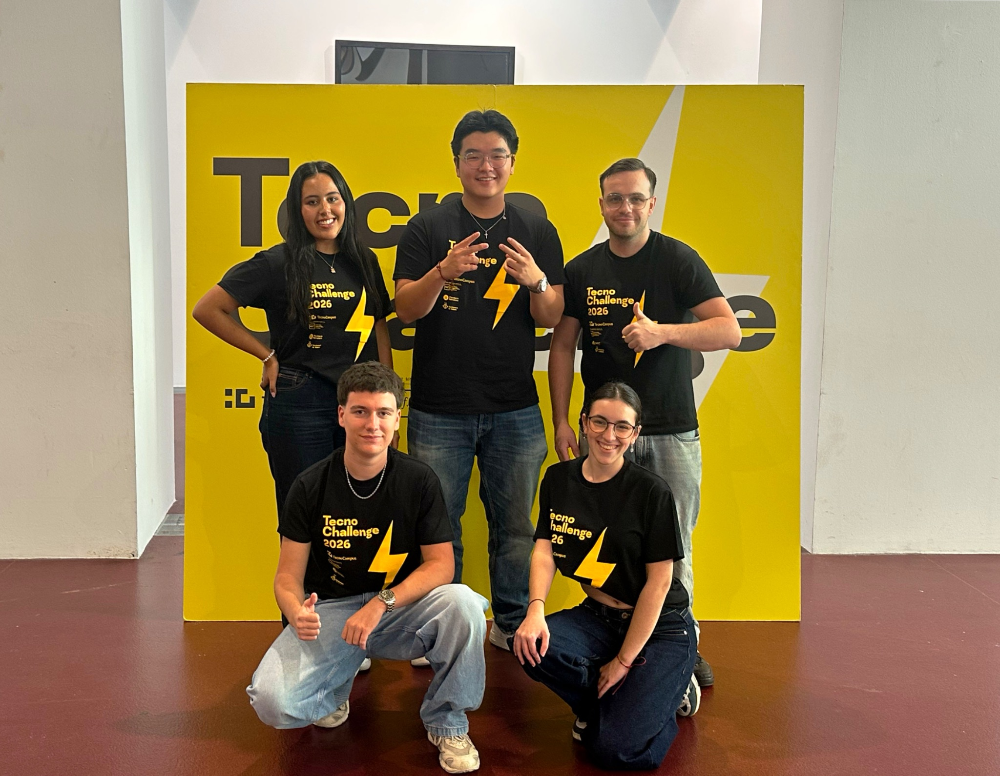

Innovación con propósito
Explorar IA y herramientas digitales para ayudar a organizar, clasificar y volver a encontrar fotografías.
Nuestra causa · NextMoment
Hacemos fotos para guardar momentos, pero muchos se quedan perdidos en la galería. NextMoment nace para ayudar a organizarlos y dar a los elegidos una vida más allá de la pantalla.
Conoce nuestro camino
Lo que nos mueve
Queremos que gestionar una galería grande resulte más sencillo y que encontrar un recuerdo importante no dependa de buscar entre miles de imágenes. La tecnología puede ayudar a ordenar; cada persona conserva la decisión sobre qué significa y qué quiere guardar.
La propuesta conecta esa selección con álbumes y otros productos fotográficos. El objetivo es convertir recuerdos elegidos en momentos que también podamos abrir, compartir y volver a disfrutar en papel.
NextMoment es una propuesta en desarrollo; las funciones descritas no representan un servicio comercial activo.La motivación del proyecto
Una mirada al reto que nos hizo pensar cómo recuperar, organizar y compartir los recuerdos que guardamos en el móvil.
Vídeo explicativo · reproducción a demandaValores y propósito
La innovación importa cuando facilita una experiencia sencilla, respetuosa y con sentido para las personas y sus recuerdos.
Explorar IA y herramientas digitales para ayudar a organizar, clasificar y volver a encontrar fotografías.
Los recuerdos no son solo archivos: nos conectan con personas, etapas y lugares importantes.
Hacer más fácil revisar una galería y elegir qué conservar, con pasos claros y reversibles.
Tratar las fotos personales con cuidado y diseñar la experiencia para que la decisión siga siendo humana.
Elegir qué recuerdos materializar y producir solo bajo demanda son criterios a explorar, cuyo impacto real debe medirse.
Combinar perspectivas creativas, tecnológicas y empresariales a través del trabajo en equipo.
ODS relacionados
Vemos afinidad con estos Objetivos de Desarrollo Sostenible por los temas que aborda el proyecto y el proceso formativo. Esta relación no constituye una certificación ni acredita un impacto conseguido.
La propuesta busca hacer más sencilla la gestión de recuerdos y facilitar volver a momentos valiosos. No es una intervención sanitaria ni atribuye efectos clínicos.
El modelo explora una oferta digital conectada con productos y servicios fotográficos. Su viabilidad comercial y sus efectos económicos siguen por validar.
La selección consciente y la producción bajo demanda son criterios planteados. Imprimir no es automáticamente sostenible: materiales, transporte y ciclo de vida requieren evaluación.
El EcoCanvas invita a considerar materiales, producción y logística al diseñar la propuesta. No se han medido reducciones de emisiones ni impactos climáticos.
Estas relaciones temáticas reflejan la propuesta y el análisis del equipo; no constituyen certificaciones ni impactos acreditados.
Nuestro camino hasta aquí
Una evolución hecha de ideas, primeras pantallas, aprendizaje sobre las personas y decisiones de negocio.
La lluvia de ideas partió de propuestas previas y de la investigación con usuarios. Después valoramos las alternativas por valor, impacto, viabilidad, sostenibilidad y diferenciación.
Revisar la galería con swipe, rescatar los mejores momentos y convertirlos en un álbum impreso con QR.
24/25 · valoración internaUn QR en una boda o viaje para que el grupo suba fotos; la IA selecciona momentos y cada persona recibe un álbum.
Enviar cada trimestre postales sorpresa a la familia con fotografías olvidadas de años anteriores.
Un marco conectado que recibe las mejores fotos que comparten hijos y nietos.
Conectar el móvil en una tienda, revisar la galería con IA e imprimir una selección en el momento.
Un juego de preguntas para amigos con fotos antiguas: adivinar dónde, cuándo y quién aparece.
Proponer cada noviembre doce fotos del año para crear un calendario listo para regalar.
Situar las fotos en los lugares donde se hicieron y convertir el mapa en un póster.
Añadir una nota de audio con la historia de una foto y abrirla desde el impreso mediante QR.
Enfocar una foto impresa con el móvil para reproducir el vídeo de ese momento.
El documento la selecciona porque une dos partes del reto: aliviar la sobrecarga de la galería y transformar lo elegido en un recuerdo físico y compartible. La puntuación de 24/25 corresponde a la matriz del equipo, no a una validación externa.
Las primeras pantallas nos ayudaron a visualizar el Modo Match, los álbumes, la tienda y el perfil. Son prototipos iniciales; no representan capturas de la aplicación final.
El mapa de empatía organiza lo que una persona piensa, siente, oye, ve, dice y hace, junto con sus esfuerzos y resultados deseados. Nos ayudó a convertir respuestas y hábitos en necesidades concretas.
Los mapas resumen una versión posterior de la investigación con 101 respuestas. Las cifras de la portada proceden del documento inicial de ideas, que recoge 83; las bases no se han combinado.
El EcoCanvas nos permitió analizar propuesta de valor, usuarios, actividades, recursos, costes e ingresos, además de las dimensiones ambiental y social. No es una medición de impacto.
Una app para revisar fotos y convertir una selección en álbumes; posibles usuarios individuales y canales de tiendas de fotografía.
Pago por álbum, licencia o pedido como hipótesis; impresión, envío, tecnología y operación requieren validación económica.
El análisis recoge posibles efectos positivos y negativos. El papel, el transporte, los servidores y la privacidad deben medirse antes de afirmar beneficios.
La aplicación final está disponible en una publicación independiente. Las imágenes del prototipo inicial mostradas arriba documentan otra etapa del proceso.
Prueba la aplicación final y recorre la experiencia interactiva.
Probar NextMoment